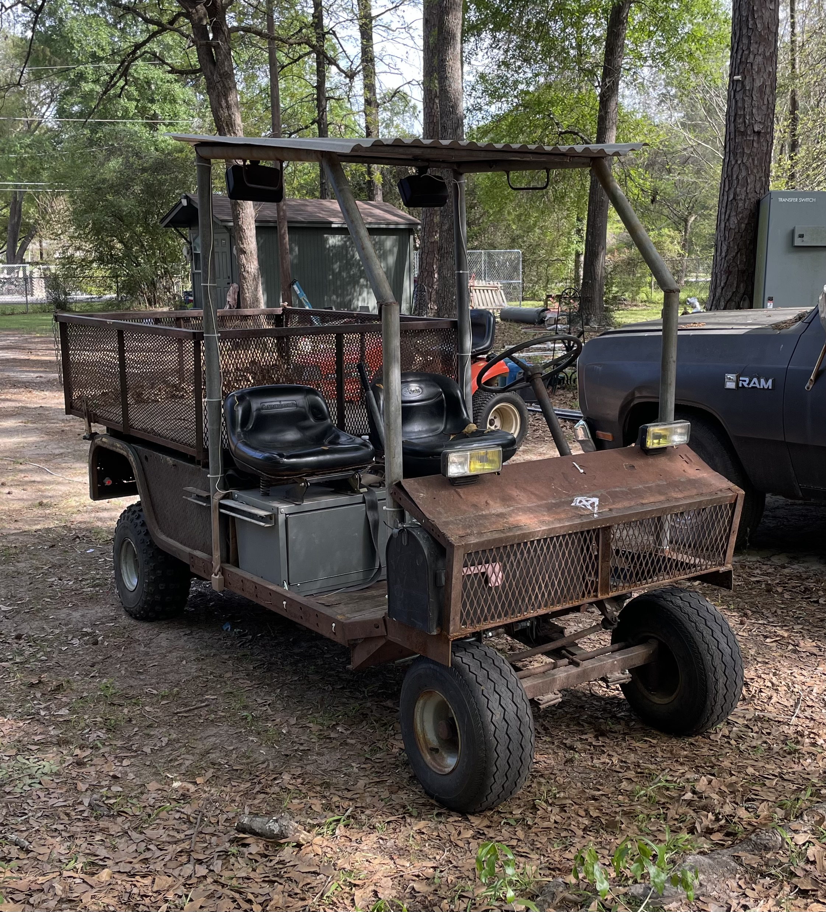

Utility Vehicle
Rebuilt a salvaged utility vehicle from a bare chassis, integrating a 16 hp engine and fabricating a custom high/low dual-clutch V-belt transmission. Additional work included the roll cage, suspension, steering, throttle linkages, and a functional dumping bed.
View Project